Task runners / same-node experiment
Work has
an order.
Nift, Turbo and Nx run the same project workflow. What happens when tasks are clean, inputs change, branches run together—or a prerequisite fails?
20 → 100 → 1,000 tasks / workers 1, 2, 4
Branches converge on package. Client feeds docs; helper is independent. Added asset families exercise fan-out and independent lanes. Exact relationships ↓
At 1,000 mixed tasks / j4, unchanged CLI medians were Nift v4.12 final 118.418 ms, Turbo 436.115 ms, Nx 1,736.465 ms. All-dirty medians were Nift v4.12 final 13.410 s, Turbo 112.412 s, Nx 17.838 s. These are descriptive observations of this workflow; the full-dirty cells have three measured samples.
01 / workflow
One workflow. Three native descriptions.
The common quantitative graph uses identical Python task bodies: content-hashed JSON outputs, text transforms, checks, one real helper compilation/execution, deterministic in-memory packaging and release validation. Additional asset tasks expand the graph. Each successful check produces a receipt in all runners.
Task names model workflow roles. Checks assert known properties of a 32-record input; web/docs transform text; the helper compiles a trivial C program; package validates an in-memory tar. No real TypeScript compiler, application test suite, framework build or deployment is measured.
Cached check receipts are not always-run, outputless checks. This is a synthetic single-project workflow—not a production JavaScript framework, package discovery benchmark, or remote-cache comparison. Outputless behavior is outside this matched quantitative comparison.
| Task | Prerequisites |
|---|---|
| generate-schema | none |
| generate-client | generate-schema |
| typecheck / unit-test | generate-client |
| lint / build-helper | none |
| build-web | typecheck, lint, unit-test |
| docs | generate-client |
| package | build-web, build-helper, docs |
| integration-test | package |
| verify | integration-test |
| release-prep | verify |
02 / noop
Nothing changed. State still costs time.
Every task body must remain unexecuted. Nift checks retained tracked input/output state; Turbo and Nx report native local cache hits with output files already present. These are different skip mechanisms, measured as fresh CLI invocations over prepared state. Nx daemon and remote caching are disabled.
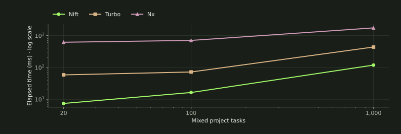


| Tasks | Nift v4.12 final ms | Turbo ms | Nx ms | n / cell |
|---|---|---|---|---|
| 20 | 7.432 | 58.387 | 616.196 | 50 |
| 100 | 16.354 | 71.943 | 703.386 | 50 |
| 1,000 | 118.418 | 436.115 | 1,736.465 | 50 |
03 / leaf
One leaf changes. Selection stays explicit.
Changing one independent asset executes exactly that task while the full graph remains in view. The targeted comparisons start with dirty selected tasks, so Nift’s force-target behavior does not add unneeded work. Release selection includes its prerequisite closure; an untimed full invocation subsequently refreshes unselected consumers.
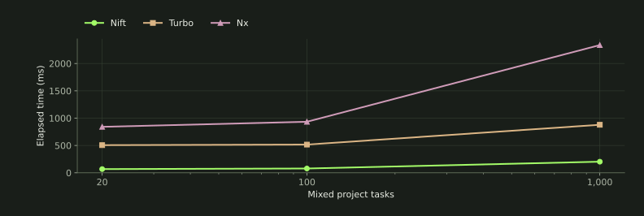


| Tasks | Nift v4.12 final ms | Turbo ms | Nx ms | n / cell |
|---|---|---|---|---|
| 20 | 56.099 | 414.070 | 689.275 | 20 |
| 100 | 65.364 | 431.787 | 767.165 | 20 |
| 1,000 | 172.437 | 747.922 | 1,878.946 | 20 |
| Case | Nift v4.12 final ms | Turbo ms | Nx ms | Executed | n / cell |
|---|---|---|---|---|---|
| Targeted leaf | 52.611 | 404.850 | 620.304 | 1 | 10 |
| Targeted release closure | 393.005 | 2,972.042 | 1,048.402 | 10 | 10 |
| Two targets | 54.834 | 435.153 | 641.712 | 2 | 10 |
Nift named targets are forced rather than a clean “ensure” operation. The graph’s worker limit is configured in the project; this snapshot does not expose the same per-invocation concurrency ergonomics as Turbo/Nx.
04 / fanout
A changed input reaches its consumers.
The 10% case changes independent asset inputs. The generated-prerequisite case changes schema input and requires the complete transitive consumer set, including schema-dependent added assets. Ordering alone is insufficient: consumed output bytes are declared as invalidation inputs.
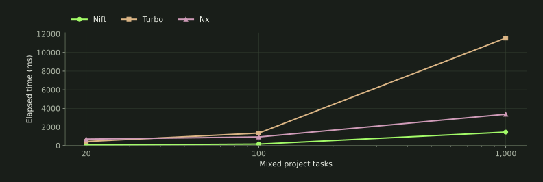


| Tasks | Nift v4.12 final ms | Turbo ms | Nx ms | n / cell |
|---|---|---|---|---|
| 20 | 58.449 | 442.417 | 701.240 | 10 |
| 100 | 163.845 | 1,345.675 | 928.215 | 5 |
| 1,000 | 1,449.169 | 11,544.650 | 3,372.805 | 3 |
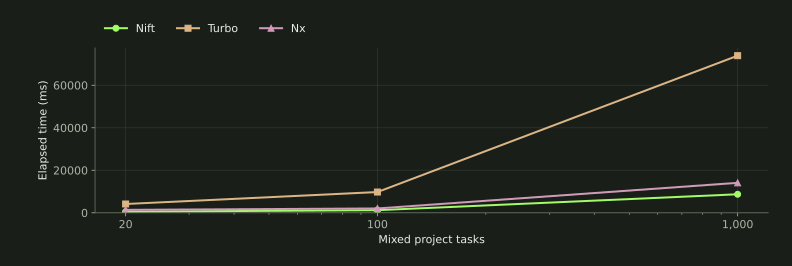


| Tasks | Nift v4.12 final ms | Turbo ms | Nx ms | n / cell |
|---|---|---|---|---|
| 20 | 412.478 | 3,127.584 | 1,121.103 | 10 |
| 100 | 903.696 | 7,478.441 | 1,554.100 | 5 |
| 1,000 | 6,798.757 | 57,030.636 | 9,865.574 | 3 |
05 / full
All inputs dirty. Every task runs.
Unique bytes change in every task input. Native caching remains enabled, including cache writes, but the exact execution oracle requires all tasks to run. These light controlled bodies do not estimate savings in compiler- or application-test-dominated projects. A separate 20-task cohort explicitly disables Turbo/Nx task-cache reads and writes and forces Nift work; these modes are not pooled.
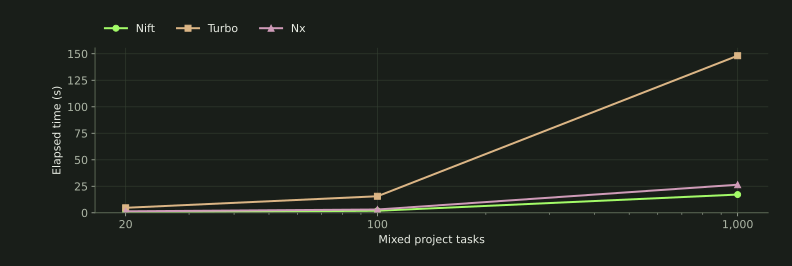


| Tasks | Nift v4.12 final s | Turbo s | Nx s | n / cell |
|---|---|---|---|---|
| 20 | 0.464 | 3.601 | 1.125 | 10 |
| 100 | 1.425 | 12.209 | 2.287 | 5 |
| 1,000 | 13.410 | 112.412 | 17.838 | 3 |
| Case | Nift v4.12 final ms | Turbo ms | Nx ms | Executed | n / cell |
|---|---|---|---|---|---|
| Cache-disabled full | 442.104 | 3,555.334 | 1,089.735 | 20 | 10 |
| Graph | Nift tasks/s | Turbo tasks/s | Nx tasks/s |
|---|---|---|---|
| mixed / 20 | 43.060 | 5.554 | 17.775 |
| mixed / 100 | 70.172 | 8.191 | 43.723 |
| mixed / 1000 | 74.568 | 8.896 | 56.059 |
| tiny / 100 | 763.722 | 9.988 | 67.133 |
| tiny / 1000 | 651.692 | 10.173 | 93.544 |
06 / parallel
Independent branches share the worker budget.
One hundred mixed tasks execute with limits of one, two and four. Task-body start/complete events independently verify ordering and overlap. These limits control task bodies; they do not imply an equal total operating-system process count because native launch layers differ.
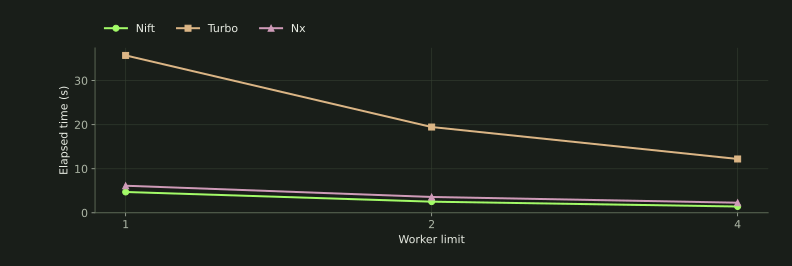


| Workers | Nift v4.12 final s | Turbo s | Nx s | n / cell |
|---|---|---|---|---|
| 1 | 4.716 | 35.701 | 6.139 | 5 |
| 2 | 2.525 | 19.458 | 3.586 | 5 |
| 4 | 1.425 | 12.209 | 2.287 | 5 |
| Worker limit | Nift v4.12 final | Turbo | Nx |
|---|---|---|---|
| 1 | 1 | 1 | 1 |
| 2 | 2 | 2 | 2 |
| 4 | 3 | 2 | 3 |
07 / failure
A failure blocks descendants, not independent work.
Semantic certification injects a schema failure, requires a nonzero exit, blocks its descendants and checks independent branch completion. Recovery verifies all expected work and output bytes. These feature tests are separate from successful timing distributions.
| Runner | Failure / recovery |
|---|---|
| Nift | Names the failed custom action; independent branches complete. A normal retry reports unfinished build; build --repair is required. |
| Turbo | Failed npm task exits nonzero; dependencies-successful continuation permits independent work and blocks dependent tasks. Fix then rerun. |
| Nx | Target failure produces a failed-task summary and nonzero status. Independent targets complete; dependent targets do not run. Fix then rerun. |
Actual stdout/stderr and start/complete/fail traces are retained with the semantic observations. Exit-code values differ and are not treated as a performance result. Turbo/Nx recovery is tested with full forced execution; Nift uses repair. These tests certify correct retry, not the fastest default incremental recovery path.
08 / tiny
Tiny work exposes orchestration and launch cost.
The same compiled C body hashes a small input and writes one deterministic output. Independent 100- and 1,000-task graphs exercise unchanged, one-task, 1%, 10% and full-dirty cases. Turbo retains its npm script launch layer, Nx uses run-commands, and Nift uses cmd: this is not isolated scheduler CPU.
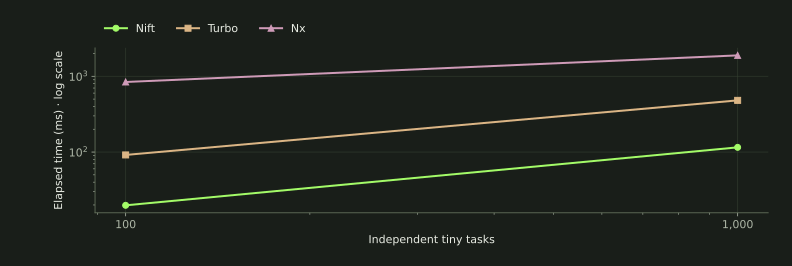


| Tasks | Nift v4.12 final ms | Turbo ms | Nx ms | n / cell |
|---|---|---|---|---|
| 100 | 14.090 | 70.034 | 656.822 | 50 |
| 1,000 | 98.629 | 412.628 | 1,554.188 | 50 |
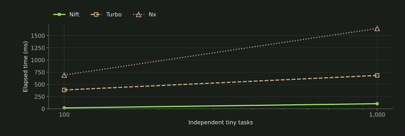


| Tasks | Nift v4.12 final ms | Turbo ms | Nx ms | n / cell |
|---|---|---|---|---|
| 100 | 18.794 | 385.966 | 692.073 | 20 |
| 1,000 | 104.292 | 683.510 | 1,646.318 | 20 |
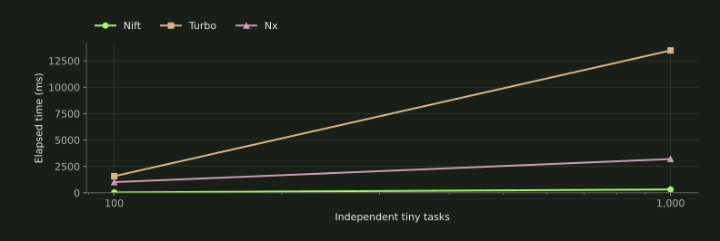


| Tasks | Nift v4.12 final ms | Turbo ms | Nx ms | n / cell |
|---|---|---|---|---|
| 100 | 27.705 | 1,187.426 | 758.190 | 5 |
| 1,000 | 238.544 | 10,095.797 | 2,566.731 | 3 |
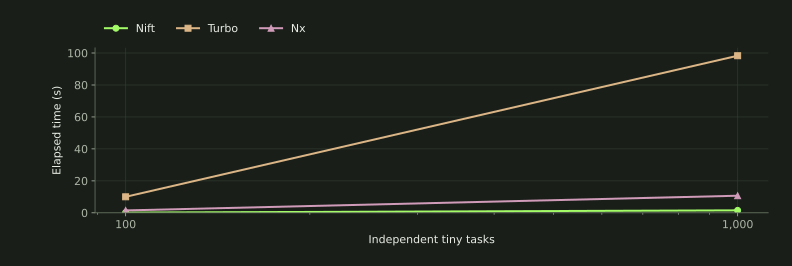


| Tasks | Nift v4.12 final s | Turbo s | Nx s | n / cell |
|---|---|---|---|---|
| 100 | 0.131 | 10.012 | 1.490 | 5 |
| 1,000 | 1.534 | 98.304 | 10.690 | 3 |
| Case | Nift v4.12 final ms | Turbo ms | Nx ms | Executed | n / cell |
|---|---|---|---|---|---|
| Unchanged | 98.629 | 412.628 | 1,554.188 | 0 | 50 |
| One leaf dirty | 104.292 | 683.510 | 1,646.318 | 1 | 20 |
| 1% inputs dirty | 117.400 | 1,432.019 | 1,761.650 | 10 | 3 |
| 10% inputs dirty | 238.544 | 10,095.797 | 2,566.731 | 100 | 3 |
| All inputs dirty | 1,534.467 | 98,304.240 | 10,690.135 | 1000 | 3 |
The optional 10,000-task cohort was excluded after local feasibility because repeated launch-heavy runs were disproportionate to this bounded diagnostic. This is a runtime-budget decision, not evidence of a graph-size capability limit.
09 / inputs
Inputs, outputs and cache are distinct contracts.
The frozen adapter declares file inputs and artifact ownership separately from task completion order. Nift validates retained state; Turbo/Nx use their native local result caches. Incremental skipping is not restoring missing outputs. Remote caching and daemon-assisted execution are excluded.
| Question | What this refresh establishes |
|---|---|
| Artifact-producing DAG | All three execute equivalent input/output/order contracts; exact action and output oracles pass. |
| Outputless checks / environment inputs | Not recertified as a matched new capability comparison. Receipt-producing checks in this adapter must not be presented as proof of every current API limit. |
| Task-result restoration | Native peer cache hits and prepared outputs are audited; no new Nift result-restoration implementation is claimed. |
| Ordering vs invalidation | Completion prerequisites and declared consumed file bytes remain distinct facts. |
| Remote cache / project inference | Not measured; choose a tool for these requirements using its own capability contract. |
Supplemental comparisons not recertified by this suite are excluded from current results.
10 / resources
Resource figures keep their measurement boundary.
Every observation retains C-supervised wall time, CPU time and Linux wait4 maximum-child RSS. RSS is a child high-water measure—not summed simultaneous memory across parallel task/Node/compiler processes. The same incremental workloads appear in timing and memory panels.
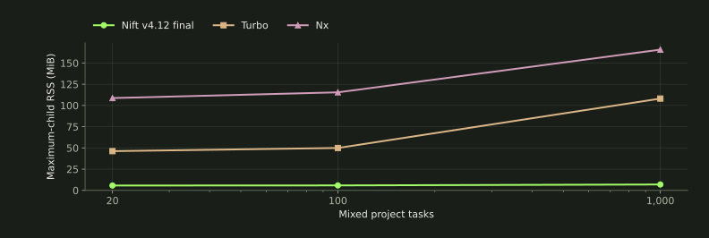


| Tasks | Nift v4.12 final MiB | Turbo MiB | Nx MiB | n / cell |
|---|---|---|---|---|
| 20 | 5.750 | 46.234 | 108.736 | 50 |
| 100 | 5.875 | 49.959 | 115.479 | 50 |
| 1,000 | 6.969 | 108.133 | 165.766 | 50 |
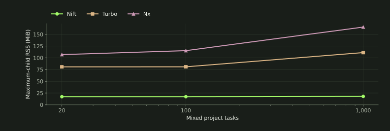


| Tasks | Nift v4.12 final MiB | Turbo MiB | Nx MiB | n / cell |
|---|---|---|---|---|
| 20 | 17.375 | 80.863 | 108.062 | 20 |
| 100 | 17.375 | 80.846 | 115.943 | 20 |
| 1,000 | 18.000 | 112.090 | 165.268 | 20 |
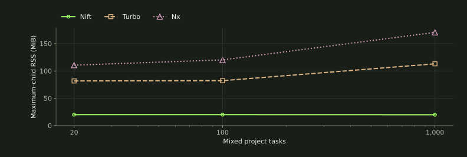


| Tasks | Nift v4.12 final MiB | Turbo MiB | Nx MiB | n / cell |
|---|---|---|---|---|
| 20 | 20.000 | 81.721 | 110.617 | 10 |
| 100 | 20.000 | 82.199 | 120.230 | 5 |
| 1,000 | 19.875 | 113.047 | 170.570 | 3 |
11 / correctness
A fast skipped task is a rejected result.
All 1,527 accepted observations pass exact task-start/completion/output, prerequisite order, concurrency, rotation, raw-metric and distribution audits. Every warmup remains. A first attempt reused preflight caches and was rejected at the first changed leaf when Turbo restored a cached result rather than executing the required action. Its 153 observations and failed command are preserved separately; none enter these distributions. The accepted run starts at the first cell in a fresh exact suite checkout with empty fixture/project caches.
The independently certified 21 semantic observations check failure, blocked descendants, independent completion and recovery. Outputless/environment behavior is outside the matched performance matrix. The unchanged refresh runner recognizes the accepted Nx cache-disabled receipt; this is a full new run, not a continuation or pooled partial series.
23 of 93 cells have a min–max span greater than 25% of their median. This is a descriptive spread flag, not a confidence interval. Sparse three-sample cells do not support tail or significance claims.
All 93 cells: timing distributions, CPU, memory and executed counts
| Case | Runner | n | Median ms | Min–max ms | p95 ms | CPU ms | RSS MiB | Executed |
|---|---|---|---|---|---|---|---|---|
| mixed / 20 / j4 / 10% inputs dirty | Nift v4.12 final | 10 | 58.449 | 55.854–67.660 | — | 113.265 | 17.441 | 2 |
| mixed / 20 / j4 / 10% inputs dirty | Nx | 10 | 701.240 | 661.003–720.747 | — | 1,388.121 | 107.732 | 2 |
| mixed / 20 / j4 / 10% inputs dirty | Turbo | 10 | 442.417 | 425.656–456.883 | — | 975.722 | 80.605 | 2 |
| mixed / 20 / j4 / All inputs dirty | Nift v4.12 final | 10 | 464.470 | 439.748–612.463 | — | 1,071.330 | 20.000 | 20 |
| mixed / 20 / j4 / All inputs dirty | Nx | 10 | 1,125.195 | 1,050.379–1,216.618 | — | 2,456.672 | 110.617 | 20 |
| mixed / 20 / j4 / All inputs dirty | Turbo | 10 | 3,601.172 | 3,539.753–3,866.850 | — | 8,738.272 | 81.721 | 20 |
| mixed / 20 / j4 / One leaf dirty | Nift v4.12 final | 20 | 56.099 | 53.278–88.290 | 62.342 | 61.782 | 17.375 | 1 |
| mixed / 20 / j4 / One leaf dirty | Nx | 20 | 689.275 | 643.684–737.027 | 716.816 | 1,333.051 | 108.062 | 1 |
| mixed / 20 / j4 / One leaf dirty | Turbo | 20 | 414.070 | 398.948–547.051 | 499.485 | 509.730 | 80.863 | 1 |
| mixed / 20 / j4 / Two targets | Nift v4.12 final | 10 | 54.834 | 52.653–59.430 | — | 103.413 | 17.375 | 2 |
| mixed / 20 / j4 / Two targets | Nx | 10 | 641.712 | 624.986–660.636 | — | 1,323.990 | 108.129 | 2 |
| mixed / 20 / j4 / Two targets | Turbo | 10 | 435.153 | 421.275–476.955 | — | 953.070 | 80.471 | 2 |
| mixed / 20 / j4 / Unchanged | Nift v4.12 final | 50 | 7.432 | 6.480–10.988 | 9.794 | 12.273 | 5.750 | 0 |
| mixed / 20 / j4 / Unchanged | Nx | 50 | 616.196 | 574.520–777.118 | 650.593 | 819.171 | 108.736 | 0 |
| mixed / 20 / j4 / Unchanged | Turbo | 50 | 58.387 | 54.027–77.297 | 69.050 | 74.827 | 46.234 | 0 |
| mixed / 20 / j4 / Generated prerequisite dirty | Nift v4.12 final | 10 | 412.478 | 386.153–445.961 | — | 732.500 | 17.562 | 14 |
| mixed / 20 / j4 / Generated prerequisite dirty | Nx | 10 | 1,121.103 | 1,083.608–1,166.944 | — | 2,118.177 | 109.047 | 14 |
| mixed / 20 / j4 / Generated prerequisite dirty | Turbo | 10 | 3,127.584 | 3,034.554–3,424.482 | — | 6,176.991 | 81.705 | 14 |
| mixed / 20 / j4 / Targeted leaf | Nift v4.12 final | 10 | 52.611 | 51.333–65.399 | — | 51.831 | 17.375 | 1 |
| mixed / 20 / j4 / Targeted leaf | Nx | 10 | 620.304 | 610.238–667.823 | — | 1,234.264 | 106.910 | 1 |
| mixed / 20 / j4 / Targeted leaf | Turbo | 10 | 404.850 | 391.509–578.525 | — | 493.143 | 81.090 | 1 |
| mixed / 20 / j4 / Targeted release closure | Nift v4.12 final | 10 | 393.005 | 382.501–436.912 | — | 493.073 | 17.500 | 10 |
| mixed / 20 / j4 / Targeted release closure | Nx | 10 | 1,048.402 | 1,032.050–1,149.503 | — | 1,769.548 | 106.852 | 10 |
| mixed / 20 / j4 / Targeted release closure | Turbo | 10 | 2,972.042 | 2,874.247–3,027.004 | — | 4,455.878 | 81.518 | 10 |
| mixed / 20 / j4 / Cache-disabled full | Nift v4.12 final | 10 | 442.104 | 421.346–460.946 | — | 1,016.784 | 20.000 | 20 |
| mixed / 20 / j4 / Cache-disabled full | Nx | 10 | 1,089.735 | 1,055.418–1,139.032 | — | 2,366.720 | 108.924 | 20 |
| mixed / 20 / j4 / Cache-disabled full | Turbo | 10 | 3,555.334 | 3,491.139–4,059.638 | — | 8,648.149 | 81.598 | 20 |
| mixed / 100 / j1 / All inputs dirty | Nift v4.12 final | 5 | 4,716.445 | 4,688.667–4,831.884 | — | 4,718.760 | 20.000 | 100 |
| mixed / 100 / j1 / All inputs dirty | Nx | 5 | 6,139.473 | 6,090.862–6,537.112 | — | 6,794.891 | 120.109 | 100 |
| mixed / 100 / j1 / All inputs dirty | Turbo | 5 | 35,700.830 | 35,268.800–36,438.313 | — | 43,379.208 | 82.461 | 100 |
| mixed / 100 / j2 / All inputs dirty | Nift v4.12 final | 5 | 2,525.478 | 2,482.060–2,554.872 | — | 4,815.844 | 20.000 | 100 |
| mixed / 100 / j2 / All inputs dirty | Nx | 5 | 3,586.496 | 3,460.881–3,703.912 | — | 7,051.815 | 118.227 | 100 |
| mixed / 100 / j2 / All inputs dirty | Turbo | 5 | 19,458.066 | 19,399.598–20,268.609 | — | 43,702.884 | 82.145 | 100 |
| mixed / 100 / j4 / 10% inputs dirty | Nift v4.12 final | 5 | 163.845 | 161.577–173.394 | — | 521.474 | 17.484 | 10 |
| mixed / 100 / j4 / 10% inputs dirty | Nx | 5 | 928.215 | 859.667–929.475 | — | 1,984.184 | 115.484 | 10 |
| mixed / 100 / j4 / 10% inputs dirty | Turbo | 5 | 1,345.675 | 1,324.245–1,440.487 | — | 4,510.022 | 81.320 | 10 |
| mixed / 100 / j4 / All inputs dirty | Nift v4.12 final | 5 | 1,425.074 | 1,407.273–1,527.202 | — | 4,853.412 | 20.000 | 100 |
| mixed / 100 / j4 / All inputs dirty | Nx | 5 | 2,287.110 | 2,190.814–2,390.148 | — | 6,975.336 | 120.230 | 100 |
| mixed / 100 / j4 / All inputs dirty | Turbo | 5 | 12,208.815 | 12,139.558–12,467.575 | — | 42,457.598 | 82.199 | 100 |
| mixed / 100 / j4 / One leaf dirty | Nift v4.12 final | 20 | 65.364 | 61.579–76.691 | 75.230 | 87.292 | 17.375 | 1 |
| mixed / 100 / j4 / One leaf dirty | Nx | 20 | 767.165 | 725.741–1,001.403 | 837.243 | 1,433.155 | 115.943 | 1 |
| mixed / 100 / j4 / One leaf dirty | Turbo | 20 | 431.787 | 401.255–545.077 | 461.535 | 555.150 | 80.846 | 1 |
| mixed / 100 / j4 / Unchanged | Nift v4.12 final | 50 | 16.354 | 14.115–19.268 | 18.611 | 38.486 | 5.875 | 0 |
| mixed / 100 / j4 / Unchanged | Nx | 50 | 703.386 | 642.050–877.500 | 746.153 | 938.307 | 115.479 | 0 |
| mixed / 100 / j4 / Unchanged | Turbo | 50 | 71.943 | 67.381–88.782 | 80.284 | 109.675 | 49.959 | 0 |
| mixed / 100 / j4 / Generated prerequisite dirty | Nift v4.12 final | 5 | 903.696 | 875.765–1,159.209 | — | 2,648.059 | 17.500 | 54 |
| mixed / 100 / j4 / Generated prerequisite dirty | Nx | 5 | 1,554.100 | 1,541.022–1,578.031 | — | 4,299.430 | 116.789 | 54 |
| mixed / 100 / j4 / Generated prerequisite dirty | Turbo | 5 | 7,478.441 | 7,316.147–7,528.788 | — | 23,104.817 | 82.449 | 54 |
| mixed / 1,000 / j4 / 10% inputs dirty | Nift v4.12 final | 3 | 1,449.169 | 1,437.979–1,479.934 | — | 5,471.860 | 18.000 | 100 |
| mixed / 1,000 / j4 / 10% inputs dirty | Nx | 3 | 3,372.805 | 3,359.855–3,460.728 | — | 8,743.753 | 166.848 | 100 |
| mixed / 1,000 / j4 / 10% inputs dirty | Turbo | 3 | 11,544.650 | 11,287.011–11,549.681 | — | 44,118.034 | 112.102 | 100 |
| mixed / 1,000 / j4 / All inputs dirty | Nift v4.12 final | 3 | 13,410.497 | 13,227.737–13,545.120 | — | 51,619.212 | 19.875 | 1000 |
| mixed / 1,000 / j4 / All inputs dirty | Nx | 3 | 17,838.287 | 17,368.879–18,100.818 | — | 61,772.930 | 170.570 | 1000 |
| mixed / 1,000 / j4 / All inputs dirty | Turbo | 3 | 112,412.417 | 111,816.614–112,537.266 | — | 432,836.734 | 113.047 | 1000 |
| mixed / 1,000 / j4 / One leaf dirty | Nift v4.12 final | 20 | 172.437 | 161.334–188.555 | 184.440 | 385.038 | 18.000 | 1 |
| mixed / 1,000 / j4 / One leaf dirty | Nx | 20 | 1,878.946 | 1,834.386–2,124.401 | 2,038.956 | 2,990.431 | 165.268 | 1 |
| mixed / 1,000 / j4 / One leaf dirty | Turbo | 20 | 747.922 | 703.977–814.099 | 792.800 | 1,576.822 | 112.090 | 1 |
| mixed / 1,000 / j4 / Unchanged | Nift v4.12 final | 50 | 118.418 | 107.218–173.430 | 131.746 | 332.211 | 6.969 | 0 |
| mixed / 1,000 / j4 / Unchanged | Nx | 50 | 1,736.465 | 1,634.803–2,030.220 | 1,859.865 | 2,342.836 | 165.766 | 0 |
| mixed / 1,000 / j4 / Unchanged | Turbo | 50 | 436.115 | 399.335–773.195 | 504.104 | 1,146.745 | 108.133 | 0 |
| mixed / 1,000 / j4 / Generated prerequisite dirty | Nift v4.12 final | 3 | 6,798.757 | 6,754.315–6,869.772 | — | 25,901.754 | 18.125 | 504 |
| mixed / 1,000 / j4 / Generated prerequisite dirty | Nx | 3 | 9,865.574 | 9,591.053–10,119.385 | — | 32,350.729 | 168.477 | 504 |
| mixed / 1,000 / j4 / Generated prerequisite dirty | Turbo | 3 | 57,030.636 | 56,937.077–58,053.630 | — | 216,071.479 | 118.062 | 504 |
| tiny / 100 / j4 / 10% inputs dirty | Nift v4.12 final | 5 | 27.705 | 25.560–28.753 | — | 64.979 | 7.625 | 10 |
| tiny / 100 / j4 / 10% inputs dirty | Nx | 5 | 758.190 | 710.772–774.041 | — | 1,417.798 | 115.301 | 10 |
| tiny / 100 / j4 / 10% inputs dirty | Turbo | 5 | 1,187.426 | 1,144.975–1,193.217 | — | 3,949.316 | 81.082 | 10 |
| tiny / 100 / j4 / All inputs dirty | Nift v4.12 final | 5 | 130.938 | 116.224–140.168 | — | 395.488 | 7.625 | 100 |
| tiny / 100 / j4 / All inputs dirty | Nx | 5 | 1,489.571 | 1,393.462–1,550.249 | — | 2,218.322 | 117.496 | 100 |
| tiny / 100 / j4 / All inputs dirty | Turbo | 5 | 10,011.869 | 9,783.629–10,165.612 | — | 38,337.891 | 81.883 | 100 |
| tiny / 100 / j4 / One leaf dirty | Nift v4.12 final | 20 | 18.794 | 17.499–22.907 | 21.856 | 32.292 | 7.500 | 1 |
| tiny / 100 / j4 / One leaf dirty | Nx | 20 | 692.073 | 669.927–738.196 | 732.285 | 1,141.396 | 112.203 | 1 |
| tiny / 100 / j4 / One leaf dirty | Turbo | 20 | 385.966 | 362.545–416.346 | 411.659 | 506.441 | 80.934 | 1 |
| tiny / 100 / j4 / Unchanged | Nift v4.12 final | 50 | 14.090 | 12.752–20.642 | 16.361 | 27.761 | 5.875 | 0 |
| tiny / 100 / j4 / Unchanged | Nx | 50 | 656.822 | 626.428–827.572 | 742.879 | 894.064 | 111.928 | 0 |
| tiny / 100 / j4 / Unchanged | Turbo | 50 | 70.034 | 65.318–84.789 | 79.224 | 108.013 | 49.906 | 0 |
| tiny / 100 / j4 / 1% inputs dirty | Nift v4.12 final | 5 | 18.318 | 17.086–18.894 | — | 31.294 | 7.500 | 1 |
| tiny / 100 / j4 / 1% inputs dirty | Nx | 5 | 691.039 | 670.109–716.734 | — | 1,152.569 | 112.059 | 1 |
| tiny / 100 / j4 / 1% inputs dirty | Turbo | 5 | 382.282 | 360.968–394.894 | — | 501.962 | 81.070 | 1 |
| tiny / 1,000 / j4 / 10% inputs dirty | Nift v4.12 final | 3 | 238.544 | 237.419–251.027 | — | 692.323 | 8.863 | 100 |
| tiny / 1,000 / j4 / 10% inputs dirty | Nx | 3 | 2,566.731 | 2,476.270–2,566.864 | — | 3,636.693 | 158.535 | 100 |
| tiny / 1,000 / j4 / 10% inputs dirty | Turbo | 3 | 10,095.797 | 10,090.992–10,294.454 | — | 38,709.316 | 108.469 | 100 |
| tiny / 1,000 / j4 / All inputs dirty | Nift v4.12 final | 3 | 1,534.467 | 1,494.854–1,631.212 | — | 4,807.637 | 9.113 | 1000 |
| tiny / 1,000 / j4 / All inputs dirty | Nx | 3 | 10,690.135 | 10,148.098–10,740.128 | — | 12,647.889 | 163.527 | 1000 |
| tiny / 1,000 / j4 / All inputs dirty | Turbo | 3 | 98,304.240 | 97,869.821–98,576.084 | — | 383,624.039 | 115.102 | 1000 |
| tiny / 1,000 / j4 / One leaf dirty | Nift v4.12 final | 20 | 104.292 | 96.783–130.515 | 121.849 | 241.938 | 8.361 | 1 |
| tiny / 1,000 / j4 / One leaf dirty | Nx | 20 | 1,646.318 | 1,565.497–1,912.412 | 1,778.445 | 2,471.122 | 156.811 | 1 |
| tiny / 1,000 / j4 / One leaf dirty | Turbo | 20 | 683.510 | 645.701–805.022 | 733.598 | 1,464.522 | 110.053 | 1 |
| tiny / 1,000 / j4 / Unchanged | Nift v4.12 final | 50 | 98.629 | 89.516–126.818 | 109.456 | 241.268 | 6.484 | 0 |
| tiny / 1,000 / j4 / Unchanged | Nx | 50 | 1,554.188 | 1,486.365–1,650.379 | 1,617.413 | 2,151.386 | 157.449 | 0 |
| tiny / 1,000 / j4 / Unchanged | Turbo | 50 | 412.628 | 360.601–1,243.480 | 574.317 | 1,093.295 | 107.902 | 0 |
| tiny / 1,000 / j4 / 1% inputs dirty | Nift v4.12 final | 3 | 117.400 | 114.357–124.691 | — | 293.366 | 8.863 | 10 |
| tiny / 1,000 / j4 / 1% inputs dirty | Nx | 3 | 1,761.650 | 1,744.474–1,762.258 | — | 2,771.659 | 156.129 | 10 |
| tiny / 1,000 / j4 / 1% inputs dirty | Turbo | 3 | 1,432.019 | 1,428.106–1,463.275 | — | 4,789.735 | 114.340 | 10 |
12 / practitioner
AI-DX changes the choice—but not the evidence.
Qualitative practitioner judgement / observed contracts kept separate
For human-plus-agent and agent-primary bespoke authored workflows, I would choose Nift. The same applies to mixed website/assets/helpers/tasks projects owned by Nift. All 31 measured configurations have the lowest Nift wall and maximum-child RSS medians here; programmable .f policy and explicit ownership, ordering, invalidation and lifecycle also matter.
I would choose Turbo/Nx for specific task-result restoration, remote-cache/platform or framework/workspace integration requirements. Those are concrete needs, not an architectural reason to default away from Nift for new bespoke work. The timed adapter does not establish the absence of every alternative current API.
| Evidence | Conclusion |
|---|---|
| Demonstrated | Exact actions, output bytes, completion order, bounded overlap, targeting and failure/recovery checks pass. |
| Source / representation | Separate artifact/input/order declarations make semantic roles inspectable. |
| Qualitative inference | That explicit structure can help agents make bounded, reviewable edits; helpers should remove duplicated boilerplate without collapsing semantics. |
| Not measured | Autonomous authoring success, repair rate, token/time cost, arbitrary-edit safety or a complete product-native structured error contract. |
No numeric productivity or safety score is assigned. Harness JSON is not product-native structured feedback. Missing comparative probes do not establish competitor incapability.
13 / method
Frozen sources. Retained samples. One node.
One fresh 4-logical-CPU / 8-GB Ubuntu 24.04 Linode, us-east. CPU affinity includes all four CPUs. Runner order rotates within rounds; scenario order follows a fixed frozen plan. Fresh CLI invocation, prepared local state, no remote cache, Nx daemon disabled. Setup/input mutations are outside the timer; native dispatch, task work and bookkeeping are inside. Stdout/stderr are captured: native status formatting and cache-log costs are included; terminal painting is excluded. Turbo uses errors-only task logs and Nx uses static output. These CLI modes are retained with each command, not presented as equal pure scheduler CPU. No outlier removal.
The mixed body reads the canonical graph for each invocation; that identical cost is included. The suite covers 20/100/1,000 mixed tasks, 100/1,000 tiny tasks, j4 scaling, 100-task j1/j2 full-dirty work and 20-task cache-disabled/targeting cohorts. Failure and recovery are separately certified; unsupported-feature comparisons are not inferred from this adapter. Same-node variance, sparse expensive cells and this synthetic single-project model limit generalization.
- Nift source
c14d06835bca515a5281e41da0e40219c2d60ef0- Measured suite
f37b63bd13cf71256607ba4652bcc911e270f94e- Toolchain
- Node 22.22.1 / npm 9.2.0 / Turbo 2.11.7 / Nx 23.3.0 / g++ (Ubuntu 13.3.0-6ubuntu2~24.04.1) 13.3.0
- Machine
- AMD EPYC 7642 48-Core Processor / 6.8.0-134-generic / ext4; prepared local fixtures
- Canonical evidence
- Raw samples, traces, provenance and audit
- Core follow-up
- Reproducible semantic/DX gaps; Nift core was not changed.
- Reproduce
- Fairness contract · Sample plan · Independent auditor
Actual invocations and reusable Nift action
Representative 20-task unchanged command; worker count four. Nx daemon/cloud disabled; remote cache disabled. Each observation retains its complete invocation.
Nift v4.12 final: /opt/nift/nift build
Turbo: /opt/suites/task-runners-official/work/tools/node_modules/.bin/turbo run generate-schema generate-client lint typecheck unit-test build-web build-helper docs package integration-test verify release-prep asset-00000 asset-00001 asset-00002 asset-00003 asset-00004 asset-00005 asset-00006 asset-00007 --concurrency=4 --cache=local:rw --continue=dependencies-successful --output-logs=errors-only
Nx: /opt/suites/task-runners-official/work/tools/node_modules/.bin/nx run-many --projects=workflow --targets=generate-schema,generate-client,lint,typecheck,unit-test,build-web,build-helper,docs,package,integration-test,verify,release-prep,asset-00000,asset-00001,asset-00002,asset-00003,asset-00004,asset-00005,asset-00006,asset-00007 --parallel=4 --outputStyle=staticThe Nift tracked graph uses one reusable supported .f hook:
r := cmd("python3", "task_body.py", getenv("NIFT_HOOK_TARGET")).cwd(getenv("NIFT_HOOK_ROOT")).run()
if(!r.launched || r.exit_code != 0) { throw error(r.stderr, "user.task.failed") }This refresh certifies the tracked workflow and does not add an adapter scheduler.
All displayed results use exact final v4.12 candidate c14d06835bca515a5281e41da0e40219c2d60ef0, pinned to 19e390183b9bcb039abe6aa553ad88a2305b49ee. Final-candidate semantic certification: 21 retained observations · Independent current-cohort audit